1. Scope
This ER model defines the Phase 3 and Phase 4 data structure for local RMS operation and future migration planning.
2. ER Diagram

The diagram reflects current SQLite schema entities and keys used in the minimal working local app.
3. Core Entities
- users: login identity and role (admin/planner).
- resources: procedures, equipment, facilities, technicians, and related resource records.
- capabilities: named test capabilities.
- resource_capabilities: many-to-many mapping between resources and capabilities.
- customer_orders: order header per customer request.
- ordered_tests: one or more tests requested under each customer order.
- allocations: planner assignment of a resource to an ordered test.
4. Relationship Rules
- One customer_order has many ordered_tests.
- One capability can be linked to many ordered_tests as a required capability.
- resources and capabilities are linked many-to-many through resource_capabilities.
- Each ordered_test can have at most one allocation in v1 (unique ordered_test_id in allocations).
- Each allocation references one planner user to track who assigned the resource.
5. Integrity Constraints
- Unique keys on username, resource code, capability name, and order code.
- Foreign keys enforce referential integrity between mapping/transactional tables and master tables.
- Allocation validation in application logic ensures assigned resource has required capability for the ordered test.
6. Migration Notes for Cloud Phase
- Model is DB-engine agnostic and can be migrated from SQLite to PostgreSQL.
- Preserve primary and foreign key semantics during migration.
- Add migration scripts and indexes in deployment-readiness phase.